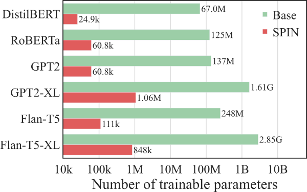
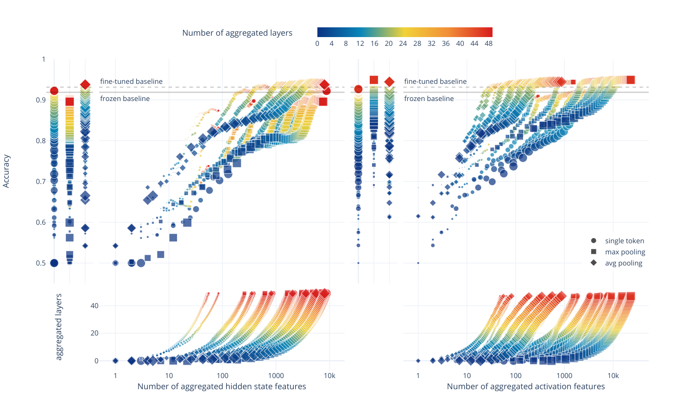
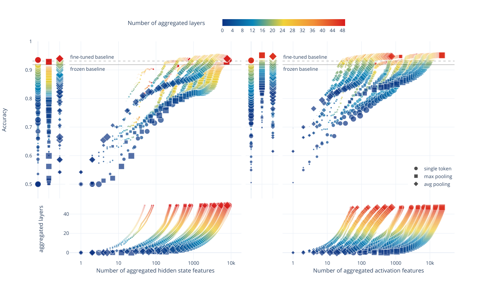

Abstract
Among the many tasks that Large Language Models (LLMs) have revolutionized is text classification. Current text classification paradigms, however, rely solely on the output of the final layer in the LLM, with the rich information contained in internal neurons largely untapped. In this study, we present SPIN11 1 Code repository and interactive web demo are publicly available via https://github.com/difanj0713/SPIN and https://liuyilun2000.github.io/spin-visualization/: a model-agnostic framework that sparsifies and integrates internal neurons of intermediate layers of LLMs for text classification. Specifically, SPIN sparsifies internal neurons by linear probing-based salient neuron selection layer by layer, avoiding noise from unrelated neurons and ensuring efficiency. The cross-layer salient neurons are then integrated to serve as multi-layered features for the classification head. Extensive experimental results show that our proposed framework can significantly improve text classification accuracy, efficiency, and interpretability.

1 Introduction
Large Language Models (LLMs) have achieved state-of-the-art performance in a wide spectrum of important tasks, including text classification such as sentiment analysis (Srivastava et al., 2022). Although prompting methods Wei et al. (2022); Kojima et al. (2022) have gained popularity in deploying LLMs for text classification, employing a classification head with these models remains a dominant paradigm, mainly due to its superior performance in specific tasks Chang et al. (2023).
This prevailing paradigm directly uses the terminal hidden states from models that are either pretrained on general tasks or fine-tuned for specific tasks. However, it is fundamentally limited in several ways. First, the implicit internal structures that contribute to LLMs’ impressive performance is neglected, forgoing potential performance gains. Second, achieving competitive performance often necessitates fine-tuning LLMs for the task at hand, which in turn can be computationally expensive. Third, this approach inherently lacks interpretability, since it treats models as black boxes. As the demand grows for models that not only perform well but are also interpretable and cost-efficient to train and run, moving beyond the current paradigm is becoming increasingly important.
We have reason to believe that delving into the internal of LLMs would bear fruit. As recent studies in AI interpretability (Radford et al., 2017; Bills et al., 2023; Gurnee and Tegmark, 2023) have revealed, internal representations of artificial neural networks are remarkably adept at capturing essential features, yet the full potential of these insights in the realm of text classification awaits further exploration and demonstration.
In this work, we introduce SPIN: a model-agnostic framework that sparsifies and integrates internal neurons of intermediate layers of LLMs for text classification. As shown in Figure 1, instead of relying solely on the final layer’s hidden states, our method uses internal representations (feed-forward network activations and hidden states) as multi-layered features to enhance the classification head. These raw internal representations require further processing before being utilized, as internal neurons do not contribute equally to predictions. Irrelevant neurons that introduce noise and extraneous information can be counterproductive, potentially diluting the impact of crucial features. Therefore, SPIN employs a linear probing based method to select salient neurons layer by layer, effectively sparsifying the internal representation. The selected neurons are then integrated across layer to serve as curated multi-layer features for text classification, ensuring that the textual features encompass a full spectrum from lower-level, simpler concepts to higher-level, more complex understandings across the hierarchical learning architecture of LLMs.
SPIN presents multiple advantages that distinguish it in the realm of text classification with LLMs. Primarily, its model-agnostic nature allows it to be employed upon various LLMs as a plug-and-play component. Also, the use of curated internal representations as features enables SPIN to outperform conventional methods that rely solely on the terminal outputs. When applied on pretrained models, SPIN can achieve performance comparable to state-of-the-art baseline methods that involve fine-tuning LLMs, accomplished by significantly improved training efficiency. This is achieved by requiring only forward passes with LLM weights untouched, and limiting trainable parameters to probing and the classification head, making SPIN a cost-effective alternative to fine-tuning for text classification. In terms of inference efficiency, SPIN enables early exiting, with up to 99% of the performance preserved from processing only 60% of LLM layers, significantly speeding up the inference process. Additionally, with its white-box approach of linear probing on internal neurons, SPIN enhances both intrinsic and post-hoc interpretability.
Our main contributions are summarized as:
- •
We propose SPIN, a model-agnostic text classification framework that leverages sparsified and integrated internal neurons from intermediate layers of LLMs, moving beyond conventional reliance on terminal hidden states;
- •
We conduct extensive experiments to demonstrate SPIN’s superior performance, improved efficiency in training and inference, and enhanced intrinsic and post-hoc interpretability in text classification.
2 Methodology
2.1 Overview
In contrast to conventional text classification methods that rely exclusively on the output from the final layer of LLMs (as in Figure 1 (a)), SPIN utilizes internal representations from intermediate layers of LLMs for text classification. As shown in Figure 1 (b), SPIN first sparsifies internal neurons with linear probing-based salient neuron selection to exclude noise from unrelated neurons and enhance efficiency. The cross-layer salient neurons are then integrated to serve as multi-grained features for the classification head.
2.2 Neuron Sparsification
The internal representations from all layers of a LLM can be obtained in a single forward pass. However, these raw representations require further processing before they can be effectively utilized for integrated multi-grained text classification. This necessity arises from the fact that not every internal neuron contributes uniformly to text classification tasks within a particular domain. Additionally, unrelated neurons can be detrimental because they may introduce noise and unnecessary information, which could potentially weaken crucial features. Consequently, we pinpoint and select neurons that exhibit the highest salience and utility for the targeted task.
LLM Internal Representations.
We first extract layer-wise internal representations from LLMs:
| (1) |
where the internal representation of the layer is obtained by extracting the hidden states, i.e., the output of each transformer layer with dimension , or the activations, i.e., intermediate representation within the feed-forward network of each transformer layer with dimension , of the LLM given the input sentence with length . Hidden states and activations are extensively utilized as internal representations in interpretability research, as evidenced by various studies (Durrani et al., 2020; Burns et al., 2022; Gurnee and Tegmark, 2023) for hidden states, and (Bills et al., 2023; Gurnee et al., 2023) for activations. We thus treat the selection of the internal representation as a hyperparameter, i.e., . The pooling operation is subsequently applied to ensure fixed-dimension internal representations for sentences of variant lengths.
| (2) |
where denotes the extracted and pooled internal representation.
Linear Probing.
We apply linear probing (Alain and Bengio, 2016) to identify the salient neurons in each layer of LLMs for the targeted task. This approach is well-established for interpretability studies in LLMs (Dalvi et al., 2019; Suau et al., 2020; Wang et al., 2022; Gurnee et al., 2023), which employs a simple linear model to interpret the saliency of neurons within neural networks by training on their frozen internal representations for specific tasks. Linear probing suits our needs for two key reasons. First, its effectiveness is supported by the linear representation hypothesis, that neural network features are linearly represented (Mikolov et al., 2013a; Mikolov et al., 2013b; Elhage et al., 2022). This suggests that linear models are sufficiently complex to capture the nuanced relationships within internal neurons. Second, its inherent simplicity ensures that our focus remains on frozen internal representations as task-relevant features, rather than on learning additional task-specific dynamics upon them. This facilitates our subsequent salient neuron selection process.
Specifically, we use the frozen internal representation of each layer as features of input sentence to train layer-wise linear models for the targeted task:
|
|
(3) |
where , , and represent the sigmoid function, the regularization coefficient, and the number of training sentences, respectively. The weights and bias of the linear model and are learned by optimizing the linear model with the binary cross-entropy loss with label . By using -regularized (Lasso) logistic regression, i.e., adding , the magnitude of the learned weights can be interpreted as indicators of the relative importance or contribution of each neuron to the prediction (Guyon and Elisseeff, 2003; Ng, 2004). In particular, larger weights signify a greater influence on the model’s output, thereby marking those neurons as particularly salient for the targeted task. Additionally, the use of Lasso logistic regression encourages the sparsity of model weights, thereby enhancing the distinction between salient and non-salient neurons (Tibshirani, 1996).
Salient Neuron Selection.
Then we gather the identified salient neurons. The learned weights are first normalized to enhance fair selection.
| (4) |
where denotes the normalized weight of the element in the linear probing weights . Following normalization, the selection of salient neurons is guided by the sparsification threshold , which serves as a metric for determining the cumulative contribution of the most significant neurons. Specifically, we select the largest until their cumulative summation reaches the . This step involves sorting in descending order to obtain and identifying the smallest subset whose cumulative sum is at least :
| (5) |
The internal neurons are then sparsified based on their saliency, identified as follows:
| (6) |
where denotes the positions of the salient neurons in layer , highlighting those most relevant for the text classification task based on their normalized weights.
2.3 Neuron Integration
LLMs exhibit a hierarchical learning structure that they transit from encoding lower-level, simpler concepts to capturing higher-level, more complex understandings across their layered architecture, and the internal neurons inherently encapsulate a wealth of information. Following the sparsification of internal neurons from each respective layer, we proceed to integrate them as cross-layer multi-grained representations into the classification head:
| (7) |
Conventional LLM-based text classifiers regard the pooled hidden states of the final layer as frozen features of the input sentence , i.e., the textual features , where denotes the total number of stacked layers in the LLM. The final layer, while representing the LLM’s cumulative understanding into a single output, might overlook or underutilize the nuanced and specialized knowledge encoded in the internal neurons of intermediate layers. Therefore, SPIN employs the cross-layer integrated representation as multi-grained features for classifying the input sentence :
| (8) |
where denotes the concatenation operation.
| IMDb (Acc.) | SST-2 (Acc.) | EDOS (Macro F1) | |||||||
| Base | SPIN | %impr. | Base | SPIN | %impr. | Base | SPIN | %impr. | |
| DistilBERT | 86.95 | 89.78 | +3.25 | 81.88 | 83.94 | +2.52 | 65.09 | 75.79 | +16.44 |
| RoBERTa | 89.67 | 93.61 | +4.39 | 84.06 | 90.59 | +7.77 | 68.81 | 73.50 | +6.82 |
| GPT2 | 87.72 | 91.94 | +4.81 | 85.89 | 87.73 | +2.14 | 68.57 | 76.08 | +10.95 |
| GPT2-M | 88.59 | 93.92 | +6.02 | 86.12 | 90.25 | +4.80 | 71.17 | 75.74 | +6.42 |
| GPT2-XL | 91.86 | 94.92 | +3.33 | 90.02 | 93.23 | +3.57 | 72.56 | 76.79 | +5.83 |
| Flan-T5-S | 84.08 | 91.15 | +8.41 | 77.17 | 88.99 | +15.32 | 59.62 | 74.51 | +24.97 |
| Flan-T5 | 90.01 | 94.14 | +4.59 | 78.26 | 92.32 | +17.97 | 66.64 | 78.04 | +17.11 |
| Flan-T5-XL | 90.50 | 96.12 | +6.21 | 84.75 | 95.64 | +12.85 | 70.08 | 81.48 | +16.27 |
| SoTA | 96.21 | 97.50 | 82.35 | ||||||
3 Experiments
We conduct extensive experiments to evaluate our proposed SPIN framework for text classification, focusing on three key dimensions: performance, efficiency, and interpretability.
3.1 Experimental Setup
Datasets.
We use three well-established benchmark datasets for text classification. Namely IMDb, a widely used movie review dataset for binary sentiment classification, SST-2, a fine-grained sentiment analysis dataset with binary labels of the sentiment polarity, and EDOS, a unique dataset with scenarios and outcomes related to ethical dilemmas, labeled by sentiment toward the ethicality of the outcomes. For IMDb and EDOS, we use the provided dataset splits for training, validation, and testing. Whereas SST-2 does not provide ground truth labels of the test set, we thus randomly select 20% data from the training set for validation and use their provided validation set for testing.
Language Models.
We consider representative pre-trained LLMs of mainstream architectures, including encoder-based models (BERT variants), decoder-based models (GPT-2 variants), and encoder-decoder models (T5 variants). As contemporary LLMs continue to scale in size, we demonstrate SPIN’s scalability on LLaMA2-7B and 13B in Appendix C.3.
Baselines.
As shown in Eq.(7), a classification head on top of the frozen terminal hidden states is trained for text classification22
2
For the detailed implementations, we refer to https://github.com/huggingface/transformers/tree/v4.37.2/src/transformers/models. In particular, encoder-based and decoder-based methods commonly employ the hidden states associated with the [CLS] token and the final token as the frozen textual features, respectively.
For encoder-decoder models,
the encoder is optimized for understanding and representing input text, unlike decoders, which are designed to generate text based on the encoded representations. For text classification, where the goal is to understand input text rather than generate new text, the encoder’s final layer is naturally the most relevant source of features.
Therefore, the classification head is built on the pooled hidden states of each encoder-decoder model’s final encoder layer.
In the subsequent sections, we refer to these baseline methods as Base.
It is important to note that the baseline classification head undergoes supervised training with the true labels from the datasets, distinguishing it from zero or few-shot prompting methods Wei et al. (2022); Kojima et al. (2022).
Implementation Details.
We conduct a grid search to optimize the hyperparameter settings of SPIN, including the Lasso regularization coefficient , the sparsification threshold , the choice of pooling strategy, and the choice of internal representations (hidden states or FFN activations, as described in Section 2.2). The ranges for the grid searching and the optimal hyperparameter settings can be found in Table 7 and Table 8 in Appendix A.2. For performance comparisons, we adhere to the official evaluation metrics specified by each benchmark dataset. In particular, we employ accuracy as the metric for IMDb and SST-2, and Macro-F1 for evaluations on EDOS.
3.2 Results and Analysis
3.2.1 SPIN Performance
Performance Improvement.
We develop SPIN on top of various mainstream model architectures, including encoder-based models (BERT variants), decoder-based models (GPT-2 variants), and encoder-decoder models (T5 variants), demonstrating SPIN is compatible with a wide spectrum of pre-trained LLMs. As the results shown in Table 1, each version of SPIN consistently outperforms the corresponding baseline method across all benchmark datasets. Specifically, the performance improvement is as much as 25% on EDOS compared to the baseline method on Flan-T5-S. Even for larger and more advanced models that are already performing well, SPIN can still be a highly effective plug-and-play component to boost the performance, e.g., Flan-T5-XL on IMDb improved by 6% with SPIN. Therefore, as long as the model weights and architecture are provided, it is promising to use SPIN as a model-agnostic component for further performance improvement.
3.2.2 SPIN and Fine-tuning
In this section, we briefly discuss the comparability and compatibility of SPIN with full fine-tuning LLMs for text classification tasks. For the analysis of SPIN in conjunction with Parameter-Efficient Fine-Tuning (PEFT) techniques, a detailed discussion is provided in Appendix C.1.
Comparability.

We compare SPIN with the state-of-the-art fine-tuned models on XLNet Yang et al. (2019b) for IMDb, T5-11B Raffel et al. (2020) for SST-2, and DeBERTa-v3-base He et al. (2021) for EDOS. As shown in Table 1, the best performing SPIN upon the considered models can approximate the SoTA performance, e.g., SPIN with Flan-T5-XL achieves 99.91% of the performance of XLNet fine-tuned on IMDb.
In particular, SPIN can adapt to the targeted task without back-propagation and parameter updates on pre-trained LLMs. It utilizes frozen LLM weights and limits the parameter learning process to the classification head, thus having significantly fewer trainable parameters, as discussed in Appendix B.1. This results in reduced storage requirements for hosting the model and potentially less data needed to effectively achieve optimal learning under the scaling law (Brown et al., 2020; Hoffmann et al., 2022).
SPIN’s better training efficiency is also evidenced by Figure 2, where we compare the theoretical computational cost within the training phase of SPIN and fine-tuning with floating-point operations (Kaplan et al., 2020), with detailed estimation in Appendix B.2. This reduced need for extensive parameter updates, i.e., SPIN only requires slightly more computations than forward passes, ensures SPIN’s scalability and accessibility, making it a viable option for applications with limited computational resources.
| IMDb | SST-2 | EDOS | ||||
|---|---|---|---|---|---|---|
| Base | SPIN | Base | SPIN | Base | SPIN | |
| DistilBERT | 92.80 | 92.88 | 91.05 | 91.19 | 78.74 | 81.12 |
| RoBERTa | 94.67 | 95.68 | 94.03 | 94.38 | 80.48 | 80.88 |
| GPT2 | 94.06 | 94.50 | 91.51 | 92.32 | — | — |
| 20% | 40% | 60% | 80% | 100% | |
|---|---|---|---|---|---|
| DistilBERT | 85.20 | 84.73 | 87.45 | 88.67 | 89.78 |
| RoBERTa | 87.06 | 89.72 | 93.13 | 93.50 | 93.61 |
| GPT2 | 87.51 | 89.00 | 91.10 | 91.88 | 91.94 |
| GPT2-M | 88.52 | 91.36 | 93.36 | 93.92 | 93.92 |
| GPT2-XL | 89.66 | 93.15 | 94.73 | 94.92 | 94.92 |
| Flan-T5-S | 82.88 | 87.74 | 90.93 | 91.32 | 91.32 |
| Flan-T5 | 84.58 | 92.55 | 94.14 | 94.14 | 94.14 |
| Flan-T5-XL | 89.21 | 95.28 | 96.12 | 96.12 | 96.12 |
Compatibility.
On the other hand, we can ideally build SPIN upon fine-tuned models to further improve its performance. However, the specific weights and architecture used to achieve SoTA results on the corresponding datasets are not publicly available, which are required for the development of SPIN. Therefore, we use publicly accessible fine-tuned LLMs for this purpose. As shown in Table 2, SPIN consistently outperforms the corresponding baseline results across all datasets, demonstrating its effectiveness when applied to already fine-tuned and well-performing models. A rigorous statistical analysis confirming the significance of this improvement is provided in Appendix C.5.
The scarcity of larger task-specific fine-tuned models here primarily due to the industry’s shift of interest towards developing general-purpose LLMs, driven by the expensive costs of fine-tuning for specific tasks. This trend underscores the critical need for developing lightweight and scalable approaches, such as our proposed SPIN, to adapt LLMs to specialized tasks without incurring significant data and computational burdens.
3.2.3 Inference Efficiency
The cost for inference is crucial for real-world model deployment. We evaluate the effectiveness of SPIN with early-exit, such that predictions are made before the entire forward pass finishes (Pope et al., 2023; Bae et al., 2023; Chen et al., 2023). In particular, only the internal neurons of part of the layers are sparsified and integrated to feed the classification head. As shown in Table 3, SPIN enables early exiting in the top 60% of layers, which ensures up to 99% of the performance achievable when using all layers, significantly speeding up the inference process while maintaining high accuracy.
3.2.4 Interpretability

Intrinsic Interpretability.
The exploration of the internal mechanisms of LLMs has laid a robust groundwork, from which we could investigate the rich interpretable data embedded within LLM neurons that is exploited by our SPIN framework. The sparsification process of SPIN can be viewed as a filtering of neurons, with both the training of linear regressors and the selection of salient neurons based on weight importance criteria inherently holding interpretability (Guyon and Elisseeff, 2003; Ceci et al., 2020). The integration process simply concatenates the selected salient neurons together, ensuring knowledge inherent in each individual salient neuron of LLM remains unchanged before being fed into the classification head.
In Figure 3, we provide a visualized breakdown of how SPIN’s ability derives from the combination of neuron sparsification and integration. As is illustrated, each layer of the sparsified neurons collectively contributes their knowledge in differentiating positive and negative samples to the integrated classifiers thence and above, enhancing progressively the performance of SPIN at higher levels. This synergistic interaction empowers the overall decision-making and performance for the classification task.
Post-hoc Interpretability.
For a detailed post-hoc analysis of how SPIN interprets each component of the input text, we demonstrate that sentence-wise SPIN classifiers, once trained, can be adeptly extended to provide token-wise predictions by simply bypassing the initial pooling process and directly engaging with the representations of each individual token during application. Further analysis and discussion is continued in Appendix C.4.

3.2.5 Hyperparameter Sensitivity
As shown in Figure 4, with the increasing , indicating that more neurons—yet less salient as sorted with decreasing weights—are being included, the performance gain gradually vanishes. The minimal accuracy gains beyond certain values suggest that the most salient features are already captured by a smaller, more focused set of neurons, and adding more neurons beyond this set contributes little to the overall performance. Especially, merely marginal performance improvement is observed when , demonstrating that SPIN can be well-performing with an easily found hyperparameter setting. On the other hand, SPIN showcases a remarkable ability to select a highly compact subset of salient neurons as shown in the bottom half of Figure 4. At a sparsification threshold of , SPIN selects only about 3% of neurons per layer. Despite this stringent selection, the performance remains highly competitive, underscoring the efficacy of our linear probing-based neuron selection method. Moreover, even at a relatively high threshold of , the proportion of selected neurons does not exceed a quarter. This can be credited to the deployment of Lasso regressors, which effectively promotes feature sparsity.
| #Neurons selected per layer | |||||
| 1 | 5 | 10 | 50 | 100 | |
| w/o SP | 69.90 | 74.78 | 82.75 | 87.01 | 90.98 |
| SPIN | 93.71 | 94.24 | 94.42 | 94.47 | 94.63 |
| #Layer | 8 | 16 | 24 | 32 | 48 |
|---|---|---|---|---|---|
| w/o IN | 87.17 | 89.84 | 92.72 | 94.12 | 92.41 |
| SPIN | 88.34 | 92.09 | 94.70 | 94.91 | 94.92 |
3.2.6 Ablation Study
We conduct ablation studies with GPT2-XL on the IMDb dataset to verify the contribution of each component in SPIN. As shown in Table 4, SPIN consistently outperforms the SPIN variant without our designed sparsification strategy across different numbers of neurons selected per layer (w/o IN), demonstrating the effectiveness of our linear probing-based neuron sparsification method. In addition, we compare SPIN with its variant that without the cross-layer integration (w/o IN). The results in Table 5 indicate the necessity of integrating cross-layer multi-grained features, as SPIN consistently outperforms w/o IN across various early-exiting settings. These findings underscore the crucial roles that both sparsification and integration play within the SPIN framework.
4 Related Work
Deep Neural Networks in Text Classification.
The integration of Deep Neural Networks (DNNs) into text classification has significantly altered the methodological landscape of Natural Language Processing. An early study by Kim (2014) demonstrated the potential of Convolutional Neural Networks (CNNs) to capture semantic features from text. Research by Conneau et al. (2017) expanded the utility of DNNs through sentence embeddings and transfer learning, achieving advanced performance across multiple text classification benchmarks. Transformer-based models (Devlin et al., 2019) have systematically enhanced text classification by offering a versatile framework capable of understanding complex linguistic patterns. Studies (Yang et al., 2019b; Caselli et al., 2021) have since further pushed the performance of this approach. The success of ChatGPT marks the advent of a new generation of text classification using LLMs, with authors reporting mixed results (Susnjak, 2024; Matter et al., 2024; Gilardi et al., 2023).
Interpretation of Language Models.
The rationale of SPIN primarily relates to the literature on interpreting internal representations in language models. Classic models like word2vec (Mikolov et al., 2013a) initially illustrated the linearly interpretable semantic features within the word embedding space. In transformer-based language models, the understanding of task-specific knowledge acquisition has been advanced by studies identifying internal neurons as experts based on their activation patterns (Suau et al., 2020; Durrani et al., 2020; Burns et al., 2022; Gurnee et al., 2023). Recent works (Bills et al., 2023; Templeton et al., 2024) have also explored automated tools for evaluating the behaviors and interpretable features of individual neurons within modern LLMs.
Internal Neurons for Text Classification.
Beyond interpretability, the prospect of leveraging internal representations for text classification has attracted attention in the literature. Studies as early as Radford et al. (2017) have shown the potential of using individual neuron activations in Long Short-Term Memory (LSTM) models for sentiment classification. Relevant research including Wang et al. (2022) empirically validated the potential of using the top-ranked task-specific neurons in RoBERTa Liu et al. (2019) for classification, attaining performance competitive with fine-tuned models. Gurnee and Tegmark (2023) demonstrates the effectiveness of leveraging internal representations in large models like LLaMA2 Touvron et al. (2023) for spacial and temporal classification tasks. Inspired by these approaches targeting individual neurons, our work seeks more to design a general, efficient, plug-and-play framework for arbitrary types of transformer-based language models.
Dynamic Neural Network.
SPIN also shares design principles with previous works under the perspective of dynamic neural network (Han et al., 2021; Xu and McAuley, 2023), such as adaptive parameter ensemble for CNN (Yang et al., 2019a), Mixture-of-Experts (MoE) (Fedus et al., 2022), and early exit strategies (Xin et al., 2020; Chen et al., 2023). Specifically, like MoE, which exploits model sparsity by routing among multiple model components, SPIN leverages feature sparsification to enhance performance; while unlike MoE’s integrated routing process among FFN experts (Jiang et al., 2024), SPIN operates as a decoupled, plug-and-play module at the granularity of FFN neurons. In terms of inference efficiency, SPIN aligns with early exit methods by allowing off-ramping at certain layers, as discussed in 3.2.3 and Table 3.
5 Conclusion
In this paper, we introduce SPIN, a novel model-agnostic plug-and-play framework designed for text classification tasks. Our approach diverges from traditional paradigms that predominantly rely on the terminal hidden states of the final layer of LLMs by leveraging the untapped potential of internal neurons. Our proposed framework sparsifies neurons from intermediate layers guided by linear probing-based selection, and integrates cross-layer salient neurons to provide rich and multi-layered features for text classification. We conduct comprehensive experiments and analysis, demonstrating that SPIN remarkably improves accuracy, efficiency, and interpretability for text classification.
Limitations
One of the primary limitations of the SPIN framework is its reliance on publicly available model architecture and weights, i.e., white-box LLMs. This requirement poses a challenge when working with some state-of-the-art (SoTA) models or proprietary fine-tuned models where the trained weights or the architecture are not publicly disclosed. As a result, while SPIN can theoretically be applied to various types of LLMs to potentially improve its performance, in practice, its deployment is limited to those models for which comprehensive access to internal mechanisms is publicly granted. Admittedly, the classification head can be improved using more sophisticated architectures, so as to further improve the text classification performance. However, we use the simple sigmoid activation on top of a linear transformation layer to better align with prior works and ensure interpretability.
Ethics Consideration
Bias and fairness.
One of the primary ethical concerns in AI, particularly in natural language processing, is the potential for biased outcomes. LLMs, trained on large-scale internet data, can inadvertently learn and perpetuate biases present in the training data. SPIN, curating task-specific internal neurons of LLMs, could also be susceptible to these biases, and by construction SPIN is capable to discover potential biased components hidden inside LLMs. It is crucial to ensure that the model is not misused to amplify societal biases, particularly those related to race, gender, minority identity groups, or other sensitive attributes in different contexts and cultures. Continuous monitoring and mitigation strategies are necessary to address and reduce the impact of these biases, thereby promoting fairness and ethical responsibility in AI applications.
Dataset contents.
The datasets utilized in our research, namely IMDb, SST-2, AG News, and particularly EDOS (detecting online sexism), inherently contain a wide range of textual content, some of which might be sensitive or potentially harmful. The IMDb and SST-2 dataset reflect a broad spectrum of public opinions, and there is a possibility of encountering offensive or sensitive language, biased opinions, or controversial viewpoints. The EDOS dataset is explicitly designed to study online sexism, and as such, it contains examples of sexist remarks and content. Researchers must employ rigorous ethical standards, sensitivity, and transparency when working with these datasets.
Acknowledgements
We gratefully acknowledge the insightful comments and suggestions from our anonymous reviewers and area chair that helped us improve this manuscript. Part of this material is funded by grants from Natural Sciences and Engineering Research Council of Canada, Canada Foundation for Innovation, and Ontario Research Fund.
References
- Alain and Bengio (2016) Guillaume Alain and Yoshua Bengio. 2016. Understanding intermediate layers using linear classifier probes. ArXiv preprint, abs/1610.01644.
- Bae et al. (2023) Sangmin Bae, Jongwoo Ko, Hwanjun Song, and Se-Young Yun. 2023. Fast and robust early-exiting framework for autoregressive language models with synchronized parallel decoding. ArXiv preprint, abs/2310.05424.
- Bills et al. (2023) Steven Bills, Nick Cammarata, Dan Mossing, Henk Tillman, Leo Gao, Gabriel Goh, Ilya Sutskever, Jan Leike, Jeff Wu, and William Saunders. 2023. Language models can explain neurons in language models. URL https://openaipublic.blob.core.windows.net/neuron-explainer/paper/index.html. (Date accessed: 14.05. 2023).
- Brown et al. (2020) Tom B. Brown, Benjamin Mann, Nick Ryder, Melanie Subbiah, Jared Kaplan, Prafulla Dhariwal, Arvind Neelakantan, Pranav Shyam, Girish Sastry, Amanda Askell, Sandhini Agarwal, Ariel Herbert-Voss, Gretchen Krueger, Tom Henighan, Rewon Child, Aditya Ramesh, Daniel M. Ziegler, Jeffrey Wu, Clemens Winter, Christopher Hesse, Mark Chen, Eric Sigler, Mateusz Litwin, Scott Gray, Benjamin Chess, Jack Clark, Christopher Berner, Sam McCandlish, Alec Radford, Ilya Sutskever, and Dario Amodei. 2020. Language models are few-shot learners. In Advances in Neural Information Processing Systems 33: Annual Conference on Neural Information Processing Systems 2020, NeurIPS 2020, December 6-12, 2020, virtual.
- Burns et al. (2022) Collin Burns, Haotian Ye, Dan Klein, and Jacob Steinhardt. 2022. Discovering latent knowledge in language models without supervision. ArXiv preprint, abs/2212.03827.
- Caselli et al. (2021) Tommaso Caselli, Valerio Basile, Jelena Mitrović, and Michael Granitzer. 2021. HateBERT: Retraining BERT for abusive language detection in English. In Proceedings of the 5th Workshop on Online Abuse and Harms (WOAH 2021), pages 17–25, Online. Association for Computational Linguistics.
- Ceci et al. (2020) Michelangelo Ceci, Corrado Loglisci, G. Manco, E. Masciari, Z. Ras, R. Goebel, and Yuzuru Tanaka. 2020. New frontiers in mining complex patterns: 8th international workshop, nfmcp 2019, held in conjunction with ecml-pkdd 2019, würzburg, germany, september 16, 2019, revised selected papers. New Frontiers in Mining Complex Patterns.
- Chang et al. (2023) Yupeng Chang, Xu Wang, Jindong Wang, Yuan Wu, Linyi Yang, Kaijie Zhu, Hao Chen, Xiaoyuan Yi, Cunxiang Wang, Yidong Wang, et al. 2023. A survey on evaluation of large language models. ACM Transactions on Intelligent Systems and Technology.
- Chen et al. (2023) Yanxi Chen, Xuchen Pan, Yaliang Li, Bolin Ding, and Jingren Zhou. 2023. Ee-llm: Large-scale training and inference of early-exit large language models with 3d parallelism. ArXiv preprint, abs/2312.04916.
- Conneau et al. (2017) Alexis Conneau, Douwe Kiela, Holger Schwenk, Loïc Barrault, and Antoine Bordes. 2017. Supervised learning of universal sentence representations from natural language inference data. In Proc. of EMNLP, pages 670–680, Copenhagen, Denmark. Association for Computational Linguistics.
- Dalvi et al. (2019) Fahim Dalvi, Nadir Durrani, Hassan Sajjad, Yonatan Belinkov, Anthony Bau, and James R. Glass. 2019. What is one grain of sand in the desert? analyzing individual neurons in deep NLP models. In The Thirty-Third AAAI Conference on Artificial Intelligence, AAAI 2019, The Thirty-First Innovative Applications of Artificial Intelligence Conference, IAAI 2019, The Ninth AAAI Symposium on Educational Advances in Artificial Intelligence, EAAI 2019, Honolulu, Hawaii, USA, January 27 - February 1, 2019, pages 6309–6317. AAAI Press.
- Devlin et al. (2019) Jacob Devlin, Ming-Wei Chang, Kenton Lee, and Kristina Toutanova. 2019. BERT: Pre-training of deep bidirectional transformers for language understanding. In Proc. of NAACL-HLT, pages 4171–4186, Minneapolis, Minnesota. Association for Computational Linguistics.
- Durrani et al. (2020) Nadir Durrani, Hassan Sajjad, Fahim Dalvi, and Yonatan Belinkov. 2020. Analyzing individual neurons in pre-trained language models. In Proc. of EMNLP, pages 4865–4880, Online. Association for Computational Linguistics.
- Elhage et al. (2022) Nelson Elhage, Tristan Hume, Catherine Olsson, Neel Nanda, Tom Henighan, Scott Johnston, Sheer ElShowk, Nicholas Joseph, Nova DasSarma, Ben Mann, et al. 2022. Softmax linear units. Transformer Circuits Thread.
- Fedus et al. (2022) William Fedus, Barret Zoph, and Noam Shazeer. 2022. Switch transformers: Scaling to trillion parameter models with simple and efficient sparsity. Journal of Machine Learning Research, 23(120):1–39.
- Gilardi et al. (2023) Fabrizio Gilardi, Meysam Alizadeh, and Maël Kubli. 2023. Chatgpt outperforms crowd workers for text-annotation tasks. Proceedings of the National Academy of Sciences, 120(30).
- Gurnee et al. (2023) Wes Gurnee, Neel Nanda, Matthew Pauly, Katherine Harvey, Dmitrii Troitskii, and Dimitris Bertsimas. 2023. Finding neurons in a haystack: Case studies with sparse probing. ArXiv preprint, abs/2305.01610.
- Gurnee and Tegmark (2023) Wes Gurnee and Max Tegmark. 2023. Language models represent space and time. ArXiv preprint, abs/2310.02207.
- Guyon and Elisseeff (2003) Isabelle Guyon and Andre Elisseeff. 2003. An introduction to variable and feature selection. Journal of machine learning research, 3(Mar):1157–1182.
- Han et al. (2021) Yizeng Han, Gao Huang, Shiji Song, Le Yang, Honghui Wang, and Yulin Wang. 2021. Dynamic neural networks: A survey. IEEE Transactions on Pattern Analysis and Machine Intelligence, 44(11):7436–7456.
- He et al. (2022) Junxian He, Chunting Zhou, Xuezhe Ma, Taylor Berg-Kirkpatrick, and Graham Neubig. 2022. Towards a unified view of parameter-efficient transfer learning. In Proc. of ICLR. OpenReview.net.
- He et al. (2021) Pengcheng He, Jianfeng Gao, and Weizhu Chen. 2021. Debertav3: Improving deberta using electra-style pre-training with gradient-disentangled embedding sharing. ArXiv preprint, abs/2111.09543.
- Hoffmann et al. (2022) Jordan Hoffmann, Sebastian Borgeaud, Arthur Mensch, Elena Buchatskaya, Trevor Cai, Eliza Rutherford, Diego de Las Casas, Lisa Anne Hendricks, Johannes Welbl, Aidan Clark, et al. 2022. Training compute-optimal large language models. ArXiv preprint, abs/2203.15556.
- Houlsby et al. (2019) Neil Houlsby, Andrei Giurgiu, Stanislaw Jastrzebski, Bruna Morrone, Quentin de Laroussilhe, Andrea Gesmundo, Mona Attariyan, and Sylvain Gelly. 2019. Parameter-efficient transfer learning for NLP. In Proc. of ICML, volume 97 of Proceedings of Machine Learning Research, pages 2790–2799. PMLR.
- Hu et al. (2022) Edward J. Hu, Yelong Shen, Phillip Wallis, Zeyuan Allen-Zhu, Yuanzhi Li, Shean Wang, Lu Wang, and Weizhu Chen. 2022. Lora: Low-rank adaptation of large language models. In Proc. of ICLR. OpenReview.net.
- Jiang et al. (2024) Albert Q Jiang, Alexandre Sablayrolles, Antoine Roux, Arthur Mensch, Blanche Savary, Chris Bamford, Devendra Singh Chaplot, Diego de las Casas, Emma Bou Hanna, Florian Bressand, et al. 2024. Mixtral of experts. ArXiv preprint, abs/2401.04088.
- Kaplan et al. (2020) Jared Kaplan, Sam McCandlish, Tom Henighan, Tom B Brown, Benjamin Chess, Rewon Child, Scott Gray, Alec Radford, Jeffrey Wu, and Dario Amodei. 2020. Scaling laws for neural language models. ArXiv preprint, abs/2001.08361.
- Kim (2014) Yoon Kim. 2014. Convolutional neural networks for sentence classification. In Proc. of EMNLP, pages 1746–1751, Doha, Qatar. Association for Computational Linguistics.
- Kirk et al. (2023) Hannah Rose Kirk, Wenjie Yin, Bertie Vidgen, and Paul Röttger. 2023. Semeval-2023 task 10: Explainable detection of online sexism. ArXiv preprint, abs/2303.04222.
- Kojima et al. (2022) Takeshi Kojima, Shixiang Shane Gu, Machel Reid, Yutaka Matsuo, and Yusuke Iwasawa. 2022. Large language models are zero-shot reasoners. Advances in neural information processing systems, 35:22199–22213.
- Li and Liang (2021) Xiang Lisa Li and Percy Liang. 2021. Prefix-tuning: Optimizing continuous prompts for generation. In Proc. of ACL, pages 4582–4597, Online. Association for Computational Linguistics.
- Liu et al. (2019) Yinhan Liu, Myle Ott, Naman Goyal, Jingfei Du, Mandar Joshi, Danqi Chen, Omer Levy, Mike Lewis, Luke Zettlemoyer, and Veselin Stoyanov. 2019. Roberta: A robustly optimized bert pretraining approach. ArXiv preprint, abs/1907.11692.
- Maas et al. (2011) Andrew L. Maas, Raymond E. Daly, Peter T. Pham, Dan Huang, Andrew Y. Ng, and Christopher Potts. 2011. Learning word vectors for sentiment analysis. In Proc. of ACL, pages 142–150, Portland, Oregon, USA. Association for Computational Linguistics.
- Matter et al. (2024) Daniel Matter, Miriam Schirmer, Nir Grinberg, and Jürgen Pfeffer. 2024. Close to human-level agreement: Tracing journeys of violent speech in incel posts with gpt-4-enhanced annotations.
- Mikolov et al. (2013a) Tomáš Mikolov, Kai Chen, Greg Corrado, and Jeffrey Dean. 2013a. Efficient estimation of word representations in vector space. arXiv preprint arXiv:1301.3781.
- Mikolov et al. (2013b) Tomas Mikolov, Wen-tau Yih, and Geoffrey Zweig. 2013b. Linguistic regularities in continuous space word representations. In Proc. of NAACL-HLT, pages 746–751, Atlanta, Georgia. Association for Computational Linguistics.
- Ng (2004) Andrew Y Ng. 2004. Feature selection, l 1 vs. l 2 regularization, and rotational invariance. In Proceedings of the twenty-first international conference on Machine learning, page 78.
- Pope et al. (2023) Reiner Pope, Sholto Douglas, Aakanksha Chowdhery, Jacob Devlin, James Bradbury, Jonathan Heek, Kefan Xiao, Shivani Agrawal, and Jeff Dean. 2023. Efficiently scaling transformer inference. Proceedings of Machine Learning and Systems, 5.
- Radford et al. (2017) Alec Radford, Rafal Jozefowicz, and Ilya Sutskever. 2017. Learning to generate reviews and discovering sentiment. ArXiv preprint, abs/1704.01444.
- Raffel et al. (2020) Colin Raffel, Noam Shazeer, Adam Roberts, Katherine Lee, Sharan Narang, Michael Matena, Yanqi Zhou, Wei Li, and Peter J. Liu. 2020. Exploring the limits of transfer learning with a unified text-to-text transformer. J. Mach. Learn. Res., 21:140:1–140:67.
- Read et al. (2011) Jesse Read, Bernhard Pfahringer, Geoff Holmes, and Eibe Frank. 2011. Classifier chains for multi-label classification. Machine learning, 85:333–359.
- Srivastava et al. (2022) Aarohi Srivastava, Abhinav Rastogi, Abhishek Rao, Abu Awal Md Shoeb, Abubakar Abid, Adam Fisch, Adam R Brown, Adam Santoro, Aditya Gupta, Adrià Garriga-Alonso, et al. 2022. Beyond the imitation game: Quantifying and extrapolating the capabilities of language models. ArXiv preprint, abs/2206.04615.
- Suau et al. (2020) Xavier Suau, Luca Zappella, and Nicholas Apostoloff. 2020. Finding experts in transformer models. ArXiv preprint, abs/2005.07647.
- Sun et al. (2023) Xianghui Sun, Yunjie Ji, Baochang Ma, and Xiangang Li. 2023. A comparative study between full-parameter and lora-based fine-tuning on chinese instruction data for instruction following large language model. ArXiv preprint, abs/2304.08109.
- Susnjak (2024) Teo Susnjak. 2024. Applying bert and chatgpt for sentiment analysis of lyme disease in scientific literature. In Borrelia burgdorferi: Methods and Protocols, pages 173–183. Springer.
- Templeton et al. (2024) Adly Templeton, Tom Conerly, Jonathan Marcus, Jack Lindsey, Trenton Bricken, Brian Chen, Adam Pearce, Craig Citro, Emmanuel Ameisen, Andy Jones, Hoagy Cunningham, Nicholas L Turner, Callum McDougall, Monte MacDiarmid, C. Daniel Freeman, Theodore R. Sumers, Edward Rees, Joshua Batson, Adam Jermyn, Shan Carter, Chris Olah, and Tom Henighan. 2024. Scaling monosemanticity: Extracting interpretable features from claude 3 sonnet. Transformer Circuits Thread.
- Tibshirani (1996) Robert Tibshirani. 1996. Regression shrinkage and selection via the lasso. Journal of the Royal Statistical Society Series B: Statistical Methodology, 58(1):267–288.
- Touvron et al. (2023) Hugo Touvron, Louis Martin, Kevin Stone, Peter Albert, Amjad Almahairi, Yasmine Babaei, Nikolay Bashlykov, Soumya Batra, Prajjwal Bhargava, Shruti Bhosale, et al. 2023. Llama 2: Open foundation and fine-tuned chat models. ArXiv preprint, abs/2307.09288.
- Wang et al. (2019) Alex Wang, Amanpreet Singh, Julian Michael, Felix Hill, Omer Levy, and Samuel R. Bowman. 2019. GLUE: A multi-task benchmark and analysis platform for natural language understanding. In Proc. of ICLR. OpenReview.net.
- Wang et al. (2022) Xiaozhi Wang, Kaiyue Wen, Zhengyan Zhang, Lei Hou, Zhiyuan Liu, and Juanzi Li. 2022. Finding skill neurons in pre-trained transformer-based language models. In Proc. of EMNLP, pages 11132–11152, Abu Dhabi, United Arab Emirates. Association for Computational Linguistics.
- Wei et al. (2022) Jason Wei, Xuezhi Wang, Dale Schuurmans, Maarten Bosma, Fei Xia, Ed Chi, Quoc V Le, Denny Zhou, et al. 2022. Chain-of-thought prompting elicits reasoning in large language models. Advances in Neural Information Processing Systems, 35:24824–24837.
- Xin et al. (2020) Ji Xin, Raphael Tang, Jaejun Lee, Yaoliang Yu, and Jimmy Lin. 2020. DeeBERT: Dynamic early exiting for accelerating BERT inference. In Proc. of ACL, pages 2246–2251, Online. Association for Computational Linguistics.
- Xu and McAuley (2023) Canwen Xu and Julian McAuley. 2023. A survey on dynamic neural networks for natural language processing. In Findings of the Association for Computational Linguistics: EACL 2023, pages 2370–2381, Dubrovnik, Croatia. Association for Computational Linguistics.
- Yang et al. (2019a) Brandon Yang, Gabriel Bender, Quoc V. Le, and Jiquan Ngiam. 2019a. Condconv: Conditionally parameterized convolutions for efficient inference. In Advances in Neural Information Processing Systems 32: Annual Conference on Neural Information Processing Systems 2019, NeurIPS 2019, December 8-14, 2019, Vancouver, BC, Canada, pages 1305–1316.
- Yang et al. (2019b) Zhilin Yang, Zihang Dai, Yiming Yang, Jaime G. Carbonell, Ruslan Salakhutdinov, and Quoc V. Le. 2019b. Xlnet: Generalized autoregressive pretraining for language understanding. In Advances in Neural Information Processing Systems 32: Annual Conference on Neural Information Processing Systems 2019, NeurIPS 2019, December 8-14, 2019, Vancouver, BC, Canada, pages 5754–5764.
- Zhang et al. (2015) Xiang Zhang, Junbo Jake Zhao, and Yann LeCun. 2015. Character-level convolutional networks for text classification. In Advances in Neural Information Processing Systems 28: Annual Conference on Neural Information Processing Systems 2015, December 7-12, 2015, Montreal, Quebec, Canada, pages 649–657.
Appendix A Additional Experiment Details
A.1 Dataset Description
We select the following 3 datasets, as details summarized in Table 6:
- •
IMDb: The IMDb dataset (Maas et al., 2011) is one of the most popular sentiment classification datasets, curated for the binary classification task of positive and negative movie reviews.
- •
SST-2: The SST-2 dataset for sentiment analysis, part of the General Language Understanding Evaluation (GLUE) benchmark (Wang et al., 2019), provides a binary classification task based on the Stanford Sentiment Treebank.
- •
EDOS (SemEval-2023 Task 10): Kirk et al. (2023) collects dataset for facilitating exploratory experiments of Explainable Detection of Online Sexism (EDOS). The dataset contributes a hierarchical taxonomy of sexism content, in which we select Task A for our experiments, where systems are expected to predict whether a post is sexist or not.
| Dataset | Subset | Label | # Text |
|---|---|---|---|
| IMDb | — | pos, neg |
50,000 |
| GLUE | sst2 |
pos, neg |
70,000 |
| EDOS | Task A | non_sexist, sexist |
20,000 |
A.2 Hyperparameter Settings
Here we provide the hyperparameter search space across our experiments with SPIN in Table 7, and the corresponding hyperparameter setting in Table 8, to facilitate a better reproducibility of our reported results.
| Representation | hidden state, activation |
|---|---|
| Pooling choice | first, last, max, avg |
| {0.01, 0.1, 1, 5, 10} | |
| {0.001, 0.005, 0.01, 0.05, 0.1, 0.2, 0.3, 0.4, 0.5, 0.6, 0.8, 1} |
| IMDb | SST-2 | EDOS | ||||||||||
|---|---|---|---|---|---|---|---|---|---|---|---|---|
| LLM | rep. | pool | rep. | pool. | rep. | pool. | ||||||
| DistilBERT | act | avg | 5 | 1.0 | act | avg | 10 | 1.0 | hs | max | 5 | 0.8 |
| RoBERTa | act | avg | 10 | 0.5 | act | avg | 10 | 0.6 | hs | max | 5 | 0.5 |
| GPT2 | act | avg | 10 | 0.6 | act | avg | 5 | 0.8 | act | avg | 5 | 0.5 |
| GPT2-M | act | avg | 1 | 0.6 | act | max | 1 | 0.6 | act | avg | 1 | 0.4 |
| GPT2-XL | act | avg | 0.2 | 0.4 | act | avg | 0.5 | 0.3 | act | avg | 0.5 | 0.2 |
| Flan-T5-S | act | avg | 1 | 0.8 | act | avg | 1 | 0.6 | act | max | 0.5 | 0.6 |
| Flan-T5 | act | avg | 0.2 | 0.6 | act | avg | 0.5 | 0.6 | act | avg | 0.5 | 0.4 |
| Flan-T5-XL | act | avg | 0.2 | 0.3 | act | avg | 0.2 | 0.4 | act | avg | 0.2 | 0.2 |
Appendix B Additional Experiment Analysis
B.1 Trainable Parameters
We compare the number of trainable parameters between baseline LLMs and our SPIN framework. For baseline LLMs we refer to the model size reported by huggingface safetensors. For SPIN, we derive our estimation by calculating the total parameters of linear probes and classification head used at different stages of SPIN:
| (9) |
where refers to the number of layers of the LLM, the actual dimension of internal representation used, and the ratio of neurons sparsified by the salient neuron selection. Here the first half refers to the layer-wise salient neuron selection process, where we trained times individual linear probes, each of which with trainable parameters. The second half takes a typical workflow of aggregation across all layers, with times training of classification heads with sparsified neurons.
The estimated results are provided in Figure 5, showing that the training process of SPIN yields at least three orders of magnitude fewer parameters than the LLM it works on.

B.2 Floating Point Arithmetic
In Figure 2 of training efficiency, for the total floating point operations required in running LLM forward pass, we refer to the empirical estimations by Kaplan et al. (2020), from which we have
| (10) |
where represents the total amount of parameters with LLM, which we refer to the size reported by huggingface safetensors for each model; the number of layers, the dimension of hidden states, the maximum number of tokens for model input, and the number of sentences within the training and validation set.
For the floating point operations required in our SPIN framework, we derive from the training cost of a single linear regression:
| (11) |
where refers to the maximum number of iterations for the training of each linear regression, and the actual dimension of internal representation used. The part is for the multiplication and additions required in gradient computation, and the part is for applying logistic functions on output, which becomes marginal comparing with the dimension of input features. The parameter update process is generally negligible in comparison to the gradient computation.
By incorporating times for salient neuron selection process and times for a typical workflow of integration across all layers, we get an approximation of
| (12) |
in which the ratio of neurons sparsified by the salient neuron selection.
The floating point operation cost reported in Figure 2 takes , , , for IMDb dataset, and other values according to the corresponding model settings.
Appendix C Additional Results and Discussion
C.1 Parameter-Efficient Fine-Tuning
In this section, we discuss briefly on the compatability and comparability of SPIN with Parameter-Efficient Fine-Tuning (PEFT) techniques.
Compatibility.
SPIN is by construction compatible with LLMs integrated with PEFT methods, since SPIN relies solely on the internal representations within the model, regardless of whether and how they are fine-tuned. According to He et al. (2022), mainstream PEFT techniques typically introduce additional structures into LLMs either sequentially between transformer block components (as with adapters (Houlsby et al., 2019)) or parallelly alongside transformer block components (as in LoRA (Hu et al., 2022), prefix tuning (Li and Liang, 2021), etc.), none of which hinders SPIN’s process to acquire internal representations from FFN activations and hidden states. Depending on the extent of modifications to the LLM’s internal mechanisms, SPIN requires no or minimal adjustments to continue functioning as a plug-and-play module over PEFT-modified LLMs. Here we show results from an experiment using a LoRA-finetuned DistilBERT model available on HuggingFace over the IMDb dataset as an example. The performance results presented in Table 9 demonstrate the effectiveness of SPIN on PEFTed LLMs.
| Models | Base | SPIN | %impr. |
|---|---|---|---|
| DistilBERT Pretrained | 86.95 | 89.78 | +3.25 |
| DistilBERT w/ LoRA SFT | 87.71 | 90.58 | +3.27 |
| DistilBERT w/ Full SFT | 92.80 | 92.88 | +0.09 |
Comparability.
A key distinction between SPIN and PEFT methods is that SPIN is completely decoupled from LLMs. Here we present a series of comparisons across several dimensions of concern.
- •
Performance. Both SPIN and PEFT achieve performance approaching fully fine-tuned models when working over pretrained LLMs.
- •
Parameter Efficiency. Both methods share a similar scale of trainable parameters. PEFT requires hosting the entire LLM during the whole training process for both the forward and backward passes. In contrast, SPIN’s training process, apart from recording internal representations, can occur in highly computationally constrained environments, requiring only a few classifiers to be updated.
- •
Training Time Efficiency. PEFT components are by design highly coupled with the LLM. When applied to pretrained LLMs, though only the set of added parameters is updated, gradient computation must still cascade through the entire network, resulting actually much more time than floating-point operations in Figure 2 suggest (Sun et al., 2023). In contrast, SPIN trains lightweight linear probes independently from the LLM over the recorded internal representations, hence the floating-point operations can faithfully reflect the computation time required. Additionally, SPIN’s training can be more easily accelerated in parallel compared to PEFT methods.
- •
Inference Efficiency. SPIN naturally supports a range of dynamic neural network methods like early-exit by introducing no or minimal adjustments, whereas PEFT does not.
- •
Interpretability. Neither PEFT nor full fine-tuning offers interpretability comparable to that of SPIN.
C.2 Multiclass Classification
| Models | Base | SPIN | %impr. |
|---|---|---|---|
| DistilBERT | 91.18 | 92.21 | +1.13 |
| GPT2 | 90.64 | 92.19 | +1.71 |
| Flan-T5-S | 85.68 | 91.89 | +7.24 |
Our experiments were all implemented on classification tasks with binary features. Classification over multiclass labels (categories) can easily be transformed to multiple binary classifications by representing labels as one-hot encoded binary features and independently training one binary classifier for each feature (Read et al., 2011). Another approach is by adapting our classification heads into algorithms that naturally permit usage of more than two classes. Here we test SPIN’s performance on AG’s news topic classification dataset (Zhang et al., 2015) and train Multinomial Logistic Regressor as salient neuron selector and classification head, as reported in Table 10.
C.3 Scalability
As mainstream LLMs continue to increase in scale, in this part we showcase the scalability of SPIN on larger models LLaMA2-7B and LLaMA2-13B (Touvron et al., 2023). Results shown in Table 11 suggest that SPIN consistently outperforms the model outputs by exploiting the ability of internal neurons even from large models with 10B-level parameters. This is particularly significant, considering that fine-tuning modern LLMs on simpler tasks as sentence classification and with limited training examples becomes increasingly uneconomical and impractical as they continue scaling-up. SPIN offers a viable solution, an efficient and effective means to boost performance without extensive additional resources and processes.
| Models | Base | SPIN | %impr. |
|---|---|---|---|
| LLaMA2-7B | 94.04 | 95.76 | +1.83 |
| LLaMA2-13B | 94.55 | 96.06 | +1.60 |
C.4 Token-wise Classification


We attribute SPIN’s adaptability of transferring from sentence-wise to token-wise classification to the introduction of max and average pooling strategies during its training phase. These pooling processes enables SPIN initially trained on broader textual scopes to recognize similar patterns at the token level.
For encoder-based BERT variants, SPIN facilitates a previously unavailable transfer capability. Conventional baseline methods structurally rely on the first or special token for information gathering, making direct transfer to token-level tasks infeasible. These methods often require repetitive sentence inputs with sliding context windows for transferring, which leads to significantly higher computational costs and time. In contrast, SPIN overcomes this limitation by effectively utilizing the internal representations from all tokens at the beginning in training sentence-level classification.
For decoder-based variants, SPIN trained on pooled records exhibits similar ability to conventional methods trained on the last token’s output. This allows for direct transfer from sentence-level to token-level tasks, as demonstrated in Figure 6. The extended SPIN prediction results align well with the fine-grained, cumulative sentiment expressed at each token.
It is important to note that the use of causal attention in decoder models means that the activations and hidden states of each token represent information from all preceding positions, unlike the bidirectional understanding in encoder-based models. This characteristic enables decoder models to aggregate context in a sequentially cumulative manner. For instance, in Figure 6, during the token positions of “couldn’t find myself agreeing more with”, both the baseline method and SPIN accurately capture multiple times of sentiment flipping to the opposite, as expected in a cumulative sentiment sequence. At word positions like “yet somehow” “despite” and “nonetheless”, the result of SPIN shows much clearer patterns than the baseline method. This alignment facilitates better for a transparent post-hoc breakdown of how each token contributes to the overall sentence-level classification, showcasing the robustness of our framework.
| Models | Base | SPIN | -value |
|---|---|---|---|
| DistilBERT | 92.80 | 92.86 | 0.0169 |
| RoBERTa | 94.67 | 95.62 | |
| GPT2 | 94.06 | 94.47 | 0.0014 |
By bridging the gap across different transformer-based model architectures and offering previously obscured insights, SPIN holds significant potential as a practical tool for visualizing complex sentences or documents with classification results at varying levels of granularity. This capability lays the foundation for more transparent and accountable systems for end-users.
C.5 Statistical Significance
To ensure consistency, our aforementioned experiments were conducted using the same train/validation/test splits as established benchmarks. In order to further validate the effectiveness of our proposed SPIN framework, especially regarding the relatively marginal gains over fine-tuned models as shown in Table 2, we hereby perform a rigorous statistical significance evaluation using -fold cross-validation. As detailed in Table 12, the constant performance of the baseline model (Base) from the original dataset split is used as the mean value for the null hypothesis. We then apply the one-sample Student’s -test on the 5-fold cross-validation results of SPIN, in testing the hypothesis that SPIN can further improve the performance of an already fine-tuned model. Each performance result yields a -value less than 0.05, indicating that the improvements achieved by SPIN are statistically significant across the three models tested.
C.6 What-Which-Where Plots
For given LLMs, we train and evaluate the classifier on integrated features with each combination of pooling function , the sparsification threshold , and the number of layers integrated . We refer to following figures as what-which-where plots for better visualizing and interpreting the performance of SPIN on GPT2-XL over the IMDb dataset, along with information of what sparsification threshold is used, which pooling function is selected, and where in depth the layer integration (i.e., early exiting) takes place in LLMs. Respectively, the pooling choice is indicated with different marker shapes, the magnitude of by the marker sizes, and the number of integrated layers is shown with different colors as described in the color bar above. The horizontal axes represent the number of salient neurons integrated. Additionally, in the lower panels, we present how the number of salient features evolves with different level of layer integration, and on the left sides of each figure are the performance of SPIN grouped by different pooling functions used.

